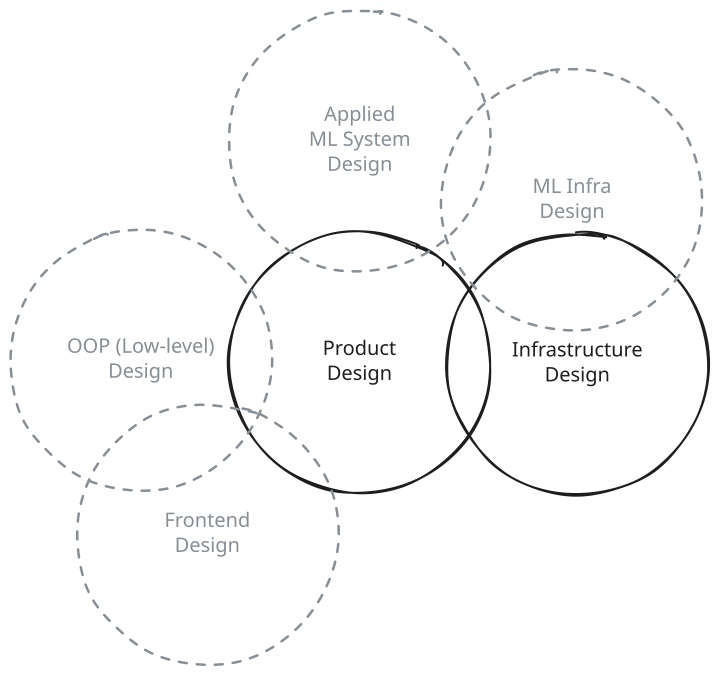
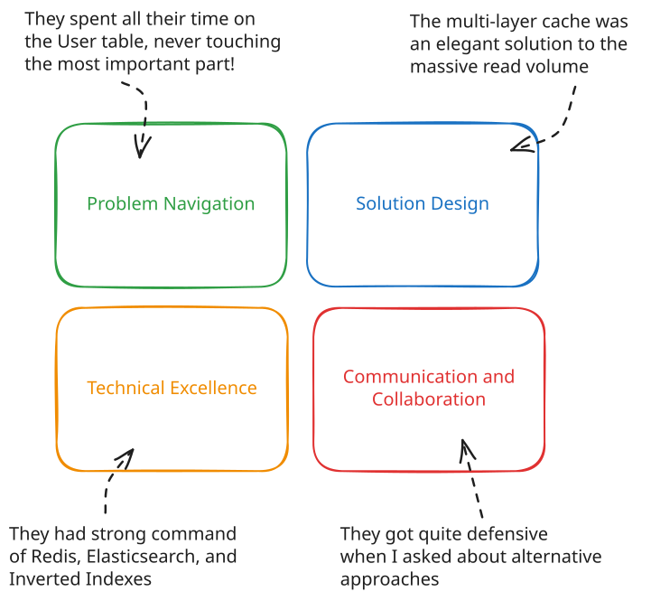
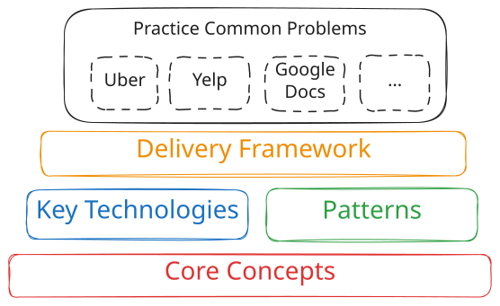

System Design in a Hurry
Introduction
Learn system design fast. All the essentials needed to pass a system design interview, built by FAANG hiring managers and staff engineers.
After conducting literally thousands of interviews at companies like Meta and Amazon, we've collected the most important things that candidates need to know to succeed in system design interviews. We call our course "System Design in a Hurry" and it's used by tens of thousands of software engineers interviewing at top companies because we take a fundamentally different approach to teaching system design than you might find elsewhere, by working backwards from those things you need to know in order to succeed in an interview.
This is helpful for two reasons:
- If you don't have a lot of time between now and your interview, you're going to learn the most impactful things as quickly as possible, and
- As you learn new things you'll be able to connect them to real systems and real problems rather than just accumulating academic knowledge.
Other system design materials are either ChatGPT spew or go to a level of depth that you'll never possibly cover in an interview (and might be a yellow flag if you do). We aimed to make 'System Design in a Hurry' dense, practical, and efficient.
We've augmented System Design in a Hurry with premium content to help you go deeper into important topics and patterns, like how to handle Realtime Updates in your applications, a deep-dive on Vector Databases, a breakdown of How to Design Instagram, and more. We think it's a fantastic investment for your interviews but is in no way required for this course. You'll see these references denoted with a lock icon.
Ready? Let's go.
What are system design interviews?
System design interviews are a way to assess your ability to take an ambiguously defined, high-level problem and break it down into the pieces of infrastructure that you'll need to solve it. These are practical interviews, not strictly academic ones, and most engineers find they are closer to real-world work than other types of interviews like the leetcode style interview.
Importantly, design interviews are not about getting to a single right answer. For many questions, there are many right answers. Instead your interviewer is looking to assess your ability to navigate a complex problem, reason about trade-offs, and communicate your thinking clearly.
Most entry-level software engineering roles will not have a system design interview (though there are plenty of exceptions). Once you've reached mid-level, system design interviews become more common. At the senior level, system design interviews are the norm and carry a disproportionate weight in the overall evaluation process for the candidate.
Types of System Design Interviews
Each company (and sometimes, each interviewer) will conduct a system design interview a little differently. You can get a sense for what to expect by browsing some of the community-reported questions we've collected. The overwhelming majority of system design interviews will be what we'll call "Product Design" or "Infrastructure Design" interviews.
In these interviews you'll be asked to design a system behind a product or a system that supports a particular infrastructure use case like "Design a ride-sharing service like Uber" or "Design a rate limiter". These problems typically require infra: services, load balancers, databases, etc. If this is you, this guide is for you.

6 types of software design interviews
Not the right spot?
- If you are planning for an interview where you'll be instead be asked to design the class structure of a system, that's an interview we call "Low-Level Design" (sometimes referred to as "Object-Oriented Design"). For these interviews, we have a different guide for you: Low-Level Design in a Hurry.
- If your interview includes ML modelling, feature engineering, and other facets of an applied ML engineer's role, we call that "ML System Design" and have created the ML System Design in a Hurry guide.
- Finally, if you're interviewing for a frontend engineering role, we highly recommend our friends at Great Frontend for both material and practice problems for frontend design interviews.
Assessment
The interviewers conducting system design interviews are looking to assess certain skills and knowledge through the course of the interview, and we'll walk you through their thought process as we go.
At a high-level, while all candidates are expected to complete a full design satisfying the requirements, a mid-level engineer might cover the basics well but not into great depth, while a senior engineer will quickly work through the basics leaving time for them to show off the depth of their knowledge in deep dives.
Sounds abstract? In our problem breakdowns, we list out the expectations of a candidate for each level for that specific problem so you can get a good idea for how the interview will be assessed.
If you're a staff+ engineer, we have some guidance specifically for you in our Staff-Level System Design blog post. Staff-level interviews are different from lower levels and you'll need to adjust your approach accordingly.
Each company will have a different rubric for system design, but regardless of level these rubrics have strong themes that are common across all interviews: Problem Navigation, Solution Design, Technical Excellence, and Communication and Collaboration. They might use different words, but they're going to touch on the same things.

Interviewer Rubric
Problem Navigation
Your interviewer is looking to assess your ability to navigate a complex, under-specified problem. This means that you should be able to break down the problem into smaller, more manageable pieces, prioritize the most important ones, and then navigate through those pieces to a solution. This is often the most important part of the interview, and the part that most candidates (especially those new to system design) struggle with. If you don't do this well, you'll burn time solving the wrong problems all the while leaving a poor impression on your interviewer.
The most common ways that candidates fail with this competency are:
- Insufficiently exploring the problem and gathering requirements.
- Focusing on uninteresting/trivial aspects of the problem vs the most important ones.
- Getting stuck on a particular piece of the problem and not being able to move forward.
- Failing to deliver a working system.
The reason many candidates fail to make progress in their interview is due to a lack of structure in their approach. We recommend following the structure outlined in the Delivery Framework section to give yourself a track to run on.
Solution Design
With a problem broken down, your interviewer wants to see how you can solve each of the pieces of the problem. This is where your knowledge of the Core Concepts comes into play. You should be able to describe how you would solve each piece of the problem, and how those pieces fit together into a cohesive whole.
The most common ways that candidates fail with this competency are:
- Not having a strong enough understanding of the core concepts to solve the problem.
- Ignoring scaling and performance considerations.
- "Spaghetti design" - a solution that is not well-structured and difficult to understand.
Interviewers are on alert for candidates who have simply memorized answers or material. They'll test you by probing your reasoning, doubting your answers, or asking you to explore tradeoffs. This is where having solid fundamentals which we'll cover coupled with appropriate depth are going to be critical to your success.
Technical Excellence
To be able to design a great system, you'll need to know about best practices, current technologies, and how to apply them. This is where your knowledge of the Key Technologies is important. You should be able to describe how you would use current technologies, with well-recognized patterns, to solve the problems.
The most common ways that candidates fail with this competency are:
- Not knowing about available technologies.
- Using antiquated approaches or being constrained by outdated hardware constraints.
- Not knowing how to apply those technologies to the problem at hand.
- Not recognizing common patterns and best practices.
Hardware has not stood still over the last decade, but much system design material is still stuck in 2015. In our guide we'll carefully call out those places where outdated approaches are no longer applicable. You'll also learn numbers to know that will help you make better decisions.
Communication and Collaboration
Technical interviews are also a way to get to know what it would be like to work with you as a colleague. Interviews are frequently collaborative, and your interviewer will be looking to see how you work with them to solve the problem. This will include your ability to communicate complex concepts, respond to feedback and questions, and in some cases work together with the interviewer to solve the problem.
The most common ways that candidates fail with this competency are:
- Not being able to communicate complex concepts clearly.
- Being defensive or argumentative when receiving feedback.
- Getting lost in the weeds and not being able to work with the interviewer to solve the problem.
How to Use This Guide
We recommend that you read this guide in order, skipping any sections you already know. We'll start with our How to Prepare section, which should give you a structure of how to organize your preparation.
While we link off to additional material where relevant, we've tried to make this guide as self-contained as possible. Don't worry if you don't have time to read the additional material.

Overall Structure
Lastly, we firmly believe you need to practice to ensure you're comfortable the day of your actual interview. A common failure mode for candidates is to have consumed a lot of material but stumble when it comes time to actually apply it. For this our guide includes worked solutions to common problems as well as our Guided Practice which walks you through the steps of an interview with personalized feedback.
Along the way, we've layered in quizzes (to make sure you're retaining) and real practice problems so you can see how to actually translate your knowledge into a working solution.
Conclusion
Ready to dive in? We're excited to have you here and can't wait to see you succeed in your interview.
If you've got questions as you make your way, the comments are a great place to ask them. You can also highlight text and click "Ask Tutor" to get a quick answer from our AI tutor, grounded in the context of this guide and with relevant references so you can learn more.
Lastly, we're constantly updating our content based on your feedback. If you have suggestions or feedback, please leave them in the comments below. And thanks in advance!